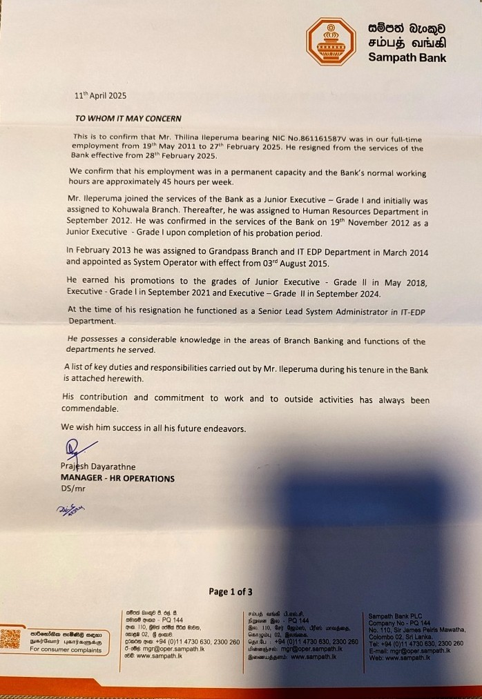
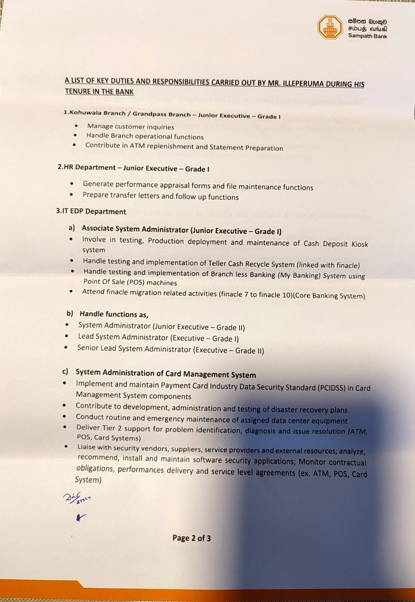
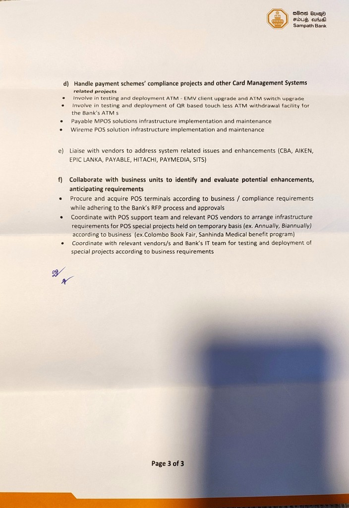

Thilina Ileperuma
Hi! 👋
I’m an IT systems professional with over 10 years of hands-on experience working in the banking sector,
where I supported and maintained large-scale Linux and Windows environments, including
ATM and POS networks used across hundreds of branches. Over the years, I’ve worked closely with
infrastructure, security, and vendor teams to keep critical systems running reliably in
high-availability, real-world environments.
I’m currently based in Hamilton, New Zealand, where I’m completing my Master of Applied Information Technology at WINTEC. Alongside my studies, I’ve been gaining local work experience with NZ Post and volunteering at a New Zealand Red Cross retail store, which has helped me quickly adapt to the New Zealand work culture and strengthen my customer-focused approach.
What really drives me is problem-solving — whether that’s troubleshooting a system issue, improving reliability, or learning something new in cloud and modern infrastructure technologies. I enjoy working in team environments, supporting end users, and continuously building my skills in areas like Azure, AWS, systems administration, and cybersecurity.
I’m now looking for opportunities in IT Support, Junior Engineer, or Systems Administrator roles, where I can contribute my experience, keep learning, and grow within a supportive technical team.
Work Experience
Senior Lead Systems Administrator
- Liaise with vendors to address system related issues and enhancements
- Collaborate with business units to identify and evaluate potential enhancements,anticipating requirements
- Procure & acquiring of POS terminals according to business / compliance requirements while adhering to the Bank’s RFP process and approvals
- Coordinate with POS support team & relevant POS vendors to arrange infrastructure requirements for POS special projects held on temporary basis(ex. Annually, 06 months, etc.) according to business needs
- Coordinate with relevant vendor/s & Bank’s IT team for testing and deployment of special projects according to business requirements
Lead Systems Administrator
- System Administration of Card Management Systems , Implement and maintain PCIDSS standards in Card Management System components
- Liaising with security vendors, suppliers, service providers and external resources; analyzing, recommending, installing and maintaining software security applications; and monitoring contractual obligations, performance delivery and service level agreements.(ex. ATM, POS, Card systems,etc.)
- Handling Payment Schemes’ compliance projects and other Card Managements Systems related projects(ex. ATM EMV upgrade, QR based touchless ATM withdrawal, Wireme MiniPOS solution, etc.)
Systems Administrator
- Performed software installations and upgrades to UNIX or Windows operating systems.(ex. ATM, Card Systems)(ex. RedHat,CentOS, AIX, Win.Server)
- Contributed to development, administration and testing of disaster recovery plans
- Conducted routine and emergency maintenance of assigned data center equipment
- Delivered Tier 2 support for problem identification, diagnosis and issue resolution(ATM, POS, Card Systems, etc.)
- Tested software remotely and onsite for server sets to maintain operational readiness
Customer service representative(Junior Executive-I Grade)
- Teller, Accounts handling, respond to customer inquiries at several Sampath Bank branches
Processing Officer (Casual)
Supported daily parcel and freight processing in a fast-paced operational environment, ensuring accuracy and on-time movement of items in line with service standards. Strengthened teamwork, attention to detail, and customer-focused communication in a New Zealand workplace setting.
- Processed and sorted freight following workflow procedures and delivery standards.
- Verified labels and identified mislabelled or damaged items for corrective action.
- Met accuracy and throughput targets while maintaining strong attention to detail.
- Collaborated with supervisors and team members to maintain smooth operations during peak periods.
Service Appreciations
A few moments of recognition that highlight my growth, commitment, and contributions throughout my professional journey.
Service Appreciation – Sampath Bank PLC
Recognition received for consistent commitment, teamwork, and reliability demonstrated during my time at Sampath Bank PLC. The appreciation reflects my contribution to daily operations, collaborative work with colleagues, and focus on maintaining high service standards in a demanding production environment.
  Education
Waikato Institute of Technology(WINTEC)
Sri Lanka Institute of Information Technology(SLIIT), Sri Lanka
Sri Lanka Institute of Information Technology(SLIIT), Sri Lanka
Sri Lanka Institute of Information Technology(SLIIT), Sri Lanka
Royal College, Sri Lanka
Skills & Tools
A mix of hands-on infrastructure experience and a strong learning mindset — focused on reliable service delivery, troubleshooting, and continuously improving systems using modern tools and cloud platforms.
- Systems Administration: Windows Server, Linux (RedHat/CentOS/AIX)
- Networking: Troubleshooting, performance optimisation, ATM/POS network operations
- Security & Compliance: PCIDSS v4.0, ISO 27001:2022 awareness, system hardening, DR/BCP
- Cloud: Microsoft Azure (learning), AWS (learning)
- Virtualisation & Labs: EVE-NG, VMware, VirtualBox
- Databases: MySQL, Oracle
- Data & Visualisation: Power BI, Orange
- Communication: clear updates to stakeholders and end users
- Problem-solving: structured troubleshooting and root-cause thinking
- Teamwork: effective collaboration across technical and non-technical teams
- Customer focus: professional support mindset from production + NZ roles
- Attention to detail: accurate work under deadlines and operational pressure
- Microsoft 365 (Word, Excel, PowerPoint)
- Power BI, Orange (analytics & visualisation)
- EVE-NG / VMware / VirtualBox(virtual lab environments)
- Windows/Linux administration toolsets (patching, monitoring, troubleshooting)
Volunteer Experiences
Volunteer Retail Assistant
Supported daily retail operations by assisting customers, operating EFTPOS, sorting and preparing donated goods, and maintaining tidy shop-floor layouts. Gained hands-on experience in customer service, teamwork, and adapting to New Zealand workplace culture in a fast-paced environment.
- Provided friendly customer service and assisted customers with item selection.
- Operated EFTPOS/till and supported general store operations.
- Sorted, quality-checked, and prepared donated goods for sale.
- Supported visual merchandising and maintained tidy shop-floor layouts.
Volunteer Photographer & Event Support
Volunteered as the primary photographer for community events, supporting event planning, coordination, and live coverage. Responsible for capturing key moments, managing on-site photography, and collaborating with organisers to deliver visual content for community engagement and promotion. Recognised with a Certificate of Appreciation for creativity, teamwork, and contribution to the success of the event.
Certificate of Appreciation

Interests
Apart from working in systems administration, I enjoy spending my free time travelling and developing my skills in photography. I have a strong interest in the photography field and have been privileged to cover several community events as a primary photographer, which has helped me build both creative and people-focused skills.
When forced indoors, I follow a number of sci-fi and fantasy genre movies and television shows, likes to read books, articles and I spend a large amount of my free time exploring the latest technolgy advancements in the cloud computing, quantum computing, etc.